Análisis de Proyecto Integrador de Aprendizaje Automatizado#
import pandas as pd
import numpy as np
import matplotlib.pyplot as plt
import seaborn as sns
from sklearn.preprocessing import StandardScaler, OneHotEncoder
from sklearn.compose import ColumnTransformer
from sklearn.model_selection import train_test_split, cross_val_score
from sklearn.neighbors import KNeighborsClassifier
from sklearn.metrics import classification_report, confusion_matrix, accuracy_score
from sklearn.decomposition import PCA
from sklearn.pipeline import Pipeline
from sklearn.metrics import precision_score, recall_score, f1_score
import warnings
warnings.filterwarnings("ignore", category=UserWarning)
warnings.filterwarnings("ignore", category=FutureWarning)
dataset = pd.read_csv('data.csv', sep=';')
print("Dimensiones:", dataset.shape)
Dimensiones: (4424, 37)
dataset.head()
| Marital status | Application mode | Application order | Course | Daytime/evening attendance\t | Previous qualification | Previous qualification (grade) | Nacionality | Mother's qualification | Father's qualification | ... | Curricular units 2nd sem (credited) | Curricular units 2nd sem (enrolled) | Curricular units 2nd sem (evaluations) | Curricular units 2nd sem (approved) | Curricular units 2nd sem (grade) | Curricular units 2nd sem (without evaluations) | Unemployment rate | Inflation rate | GDP | Target | |
|---|---|---|---|---|---|---|---|---|---|---|---|---|---|---|---|---|---|---|---|---|---|
| 0 | 1 | 17 | 5 | 171 | 1 | 1 | 122.0 | 1 | 19 | 12 | ... | 0 | 0 | 0 | 0 | 0.000000 | 0 | 10.8 | 1.4 | 1.74 | Dropout |
| 1 | 1 | 15 | 1 | 9254 | 1 | 1 | 160.0 | 1 | 1 | 3 | ... | 0 | 6 | 6 | 6 | 13.666667 | 0 | 13.9 | -0.3 | 0.79 | Graduate |
| 2 | 1 | 1 | 5 | 9070 | 1 | 1 | 122.0 | 1 | 37 | 37 | ... | 0 | 6 | 0 | 0 | 0.000000 | 0 | 10.8 | 1.4 | 1.74 | Dropout |
| 3 | 1 | 17 | 2 | 9773 | 1 | 1 | 122.0 | 1 | 38 | 37 | ... | 0 | 6 | 10 | 5 | 12.400000 | 0 | 9.4 | -0.8 | -3.12 | Graduate |
| 4 | 2 | 39 | 1 | 8014 | 0 | 1 | 100.0 | 1 | 37 | 38 | ... | 0 | 6 | 6 | 6 | 13.000000 | 0 | 13.9 | -0.3 | 0.79 | Graduate |
5 rows × 37 columns
dataset.info()
<class 'pandas.core.frame.DataFrame'>
RangeIndex: 4424 entries, 0 to 4423
Data columns (total 37 columns):
# Column Non-Null Count Dtype
--- ------ -------------- -----
0 Marital status 4424 non-null int64
1 Application mode 4424 non-null int64
2 Application order 4424 non-null int64
3 Course 4424 non-null int64
4 Daytime/evening attendance 4424 non-null int64
5 Previous qualification 4424 non-null int64
6 Previous qualification (grade) 4424 non-null float64
7 Nacionality 4424 non-null int64
8 Mother's qualification 4424 non-null int64
9 Father's qualification 4424 non-null int64
10 Mother's occupation 4424 non-null int64
11 Father's occupation 4424 non-null int64
12 Admission grade 4424 non-null float64
13 Displaced 4424 non-null int64
14 Educational special needs 4424 non-null int64
15 Debtor 4424 non-null int64
16 Tuition fees up to date 4424 non-null int64
17 Gender 4424 non-null int64
18 Scholarship holder 4424 non-null int64
19 Age at enrollment 4424 non-null int64
20 International 4424 non-null int64
21 Curricular units 1st sem (credited) 4424 non-null int64
22 Curricular units 1st sem (enrolled) 4424 non-null int64
23 Curricular units 1st sem (evaluations) 4424 non-null int64
24 Curricular units 1st sem (approved) 4424 non-null int64
25 Curricular units 1st sem (grade) 4424 non-null float64
26 Curricular units 1st sem (without evaluations) 4424 non-null int64
27 Curricular units 2nd sem (credited) 4424 non-null int64
28 Curricular units 2nd sem (enrolled) 4424 non-null int64
29 Curricular units 2nd sem (evaluations) 4424 non-null int64
30 Curricular units 2nd sem (approved) 4424 non-null int64
31 Curricular units 2nd sem (grade) 4424 non-null float64
32 Curricular units 2nd sem (without evaluations) 4424 non-null int64
33 Unemployment rate 4424 non-null float64
34 Inflation rate 4424 non-null float64
35 GDP 4424 non-null float64
36 Target 4424 non-null object
dtypes: float64(7), int64(29), object(1)
memory usage: 1.2+ MB
dataset.describe()
| Marital status | Application mode | Application order | Course | Daytime/evening attendance\t | Previous qualification | Previous qualification (grade) | Nacionality | Mother's qualification | Father's qualification | ... | Curricular units 1st sem (without evaluations) | Curricular units 2nd sem (credited) | Curricular units 2nd sem (enrolled) | Curricular units 2nd sem (evaluations) | Curricular units 2nd sem (approved) | Curricular units 2nd sem (grade) | Curricular units 2nd sem (without evaluations) | Unemployment rate | Inflation rate | GDP | |
|---|---|---|---|---|---|---|---|---|---|---|---|---|---|---|---|---|---|---|---|---|---|
| count | 4424.000000 | 4424.000000 | 4424.000000 | 4424.000000 | 4424.000000 | 4424.000000 | 4424.000000 | 4424.000000 | 4424.000000 | 4424.000000 | ... | 4424.000000 | 4424.000000 | 4424.000000 | 4424.000000 | 4424.000000 | 4424.000000 | 4424.000000 | 4424.000000 | 4424.000000 | 4424.000000 |
| mean | 1.178571 | 18.669078 | 1.727848 | 8856.642631 | 0.890823 | 4.577758 | 132.613314 | 1.873192 | 19.561935 | 22.275316 | ... | 0.137658 | 0.541817 | 6.232143 | 8.063291 | 4.435805 | 10.230206 | 0.150316 | 11.566139 | 1.228029 | 0.001969 |
| std | 0.605747 | 17.484682 | 1.313793 | 2063.566416 | 0.311897 | 10.216592 | 13.188332 | 6.914514 | 15.603186 | 15.343108 | ... | 0.690880 | 1.918546 | 2.195951 | 3.947951 | 3.014764 | 5.210808 | 0.753774 | 2.663850 | 1.382711 | 2.269935 |
| min | 1.000000 | 1.000000 | 0.000000 | 33.000000 | 0.000000 | 1.000000 | 95.000000 | 1.000000 | 1.000000 | 1.000000 | ... | 0.000000 | 0.000000 | 0.000000 | 0.000000 | 0.000000 | 0.000000 | 0.000000 | 7.600000 | -0.800000 | -4.060000 |
| 25% | 1.000000 | 1.000000 | 1.000000 | 9085.000000 | 1.000000 | 1.000000 | 125.000000 | 1.000000 | 2.000000 | 3.000000 | ... | 0.000000 | 0.000000 | 5.000000 | 6.000000 | 2.000000 | 10.750000 | 0.000000 | 9.400000 | 0.300000 | -1.700000 |
| 50% | 1.000000 | 17.000000 | 1.000000 | 9238.000000 | 1.000000 | 1.000000 | 133.100000 | 1.000000 | 19.000000 | 19.000000 | ... | 0.000000 | 0.000000 | 6.000000 | 8.000000 | 5.000000 | 12.200000 | 0.000000 | 11.100000 | 1.400000 | 0.320000 |
| 75% | 1.000000 | 39.000000 | 2.000000 | 9556.000000 | 1.000000 | 1.000000 | 140.000000 | 1.000000 | 37.000000 | 37.000000 | ... | 0.000000 | 0.000000 | 7.000000 | 10.000000 | 6.000000 | 13.333333 | 0.000000 | 13.900000 | 2.600000 | 1.790000 |
| max | 6.000000 | 57.000000 | 9.000000 | 9991.000000 | 1.000000 | 43.000000 | 190.000000 | 109.000000 | 44.000000 | 44.000000 | ... | 12.000000 | 19.000000 | 23.000000 | 33.000000 | 20.000000 | 18.571429 | 12.000000 | 16.200000 | 3.700000 | 3.510000 |
8 rows × 36 columns
dataset.isnull().sum()
Marital status 0
Application mode 0
Application order 0
Course 0
Daytime/evening attendance\t 0
Previous qualification 0
Previous qualification (grade) 0
Nacionality 0
Mother's qualification 0
Father's qualification 0
Mother's occupation 0
Father's occupation 0
Admission grade 0
Displaced 0
Educational special needs 0
Debtor 0
Tuition fees up to date 0
Gender 0
Scholarship holder 0
Age at enrollment 0
International 0
Curricular units 1st sem (credited) 0
Curricular units 1st sem (enrolled) 0
Curricular units 1st sem (evaluations) 0
Curricular units 1st sem (approved) 0
Curricular units 1st sem (grade) 0
Curricular units 1st sem (without evaluations) 0
Curricular units 2nd sem (credited) 0
Curricular units 2nd sem (enrolled) 0
Curricular units 2nd sem (evaluations) 0
Curricular units 2nd sem (approved) 0
Curricular units 2nd sem (grade) 0
Curricular units 2nd sem (without evaluations) 0
Unemployment rate 0
Inflation rate 0
GDP 0
Target 0
dtype: int64
dataset.Target.value_counts()
Target
Graduate 2209
Dropout 1421
Enrolled 794
Name: count, dtype: int64
numeric_cols = dataset.select_dtypes(include=['int64', 'float64']).columns.tolist()
print("\nDistribución de variables numéricas:")
chunk_size = 30
for j in range(0, len(numeric_cols), chunk_size):
plt.figure(figsize=(20, 15))
for i, col in enumerate(numeric_cols[j:j+chunk_size]):
plt.subplot(6, 5, i+1)
sns.histplot(dataset[col], kde=True)
plt.title(col)
plt.tight_layout()
plt.show()
Distribución de variables numéricas:
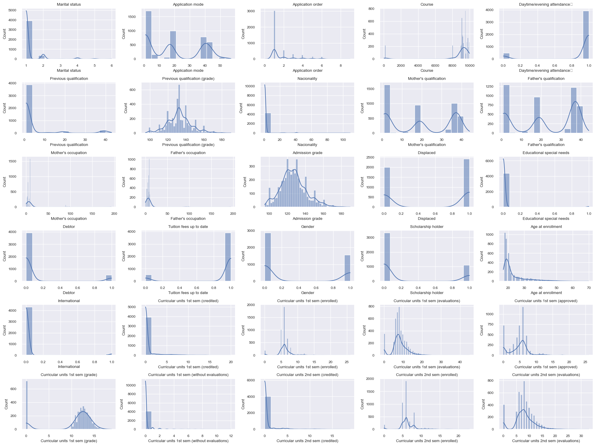
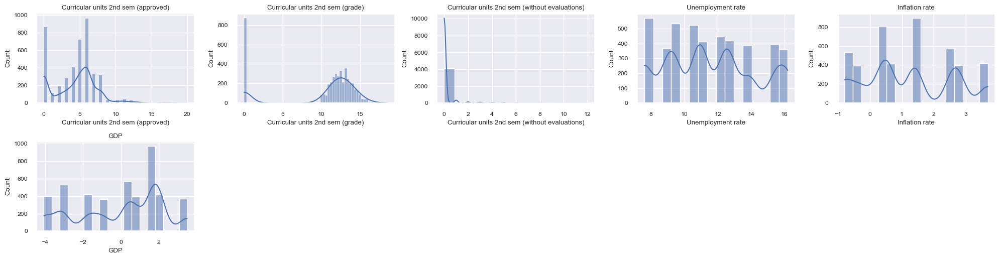
from sklearn.preprocessing import StandardScaler
from sklearn.decomposition import PCA
from sklearn.ensemble import RandomForestRegressor
import warnings
warnings.filterwarnings("ignore", category=UserWarning)
warnings.filterwarnings("ignore", category=FutureWarning)
def plot_outliers(dataset, columns):
n_cols = len(columns)
n_rows = (n_cols + 3) // 4
plt.figure(figsize=(15, 3 * n_rows))
for i, col in enumerate(columns):
plt.subplot(n_rows, 4, i+1)
sns.boxplot(y=dataset[col])
plt.title(f'Boxplot de {col}')
plt.tight_layout()
plt.show()
numeric_cols = dataset.select_dtypes(include=['int64', 'float64']).columns
print(f"Número de columnas numéricas: {len(numeric_cols)}")
print("Columnas numéricas:", list(numeric_cols))
plot_outliers(dataset, numeric_cols)
Número de columnas numéricas: 36
Columnas numéricas: ['Marital status', 'Application mode', 'Application order', 'Course', 'Daytime/evening attendance\t', 'Previous qualification', 'Previous qualification (grade)', 'Nacionality', "Mother's qualification", "Father's qualification", "Mother's occupation", "Father's occupation", 'Admission grade', 'Displaced', 'Educational special needs', 'Debtor', 'Tuition fees up to date', 'Gender', 'Scholarship holder', 'Age at enrollment', 'International', 'Curricular units 1st sem (credited)', 'Curricular units 1st sem (enrolled)', 'Curricular units 1st sem (evaluations)', 'Curricular units 1st sem (approved)', 'Curricular units 1st sem (grade)', 'Curricular units 1st sem (without evaluations)', 'Curricular units 2nd sem (credited)', 'Curricular units 2nd sem (enrolled)', 'Curricular units 2nd sem (evaluations)', 'Curricular units 2nd sem (approved)', 'Curricular units 2nd sem (grade)', 'Curricular units 2nd sem (without evaluations)', 'Unemployment rate', 'Inflation rate', 'GDP']
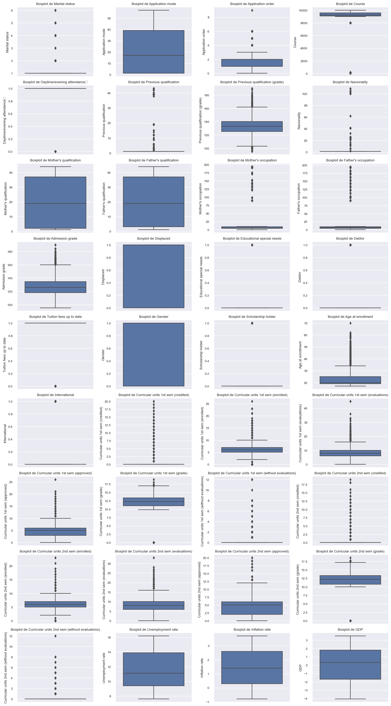
def plot_distributions(dataset, columns):
n_cols = len(columns)
n_rows = (n_cols + 3) // 4
plt.figure(figsize=(15, 3 * n_rows))
for i, col in enumerate(columns):
plt.subplot(n_rows, 4, i+1)
sns.histplot(y=dataset[col])
plt.title(f'Distribución de {col}')
plt.tight_layout()
plt.show()
numeric_cols = dataset.select_dtypes(include=['int64', 'float64']).columns
plot_distributions(dataset, numeric_cols)
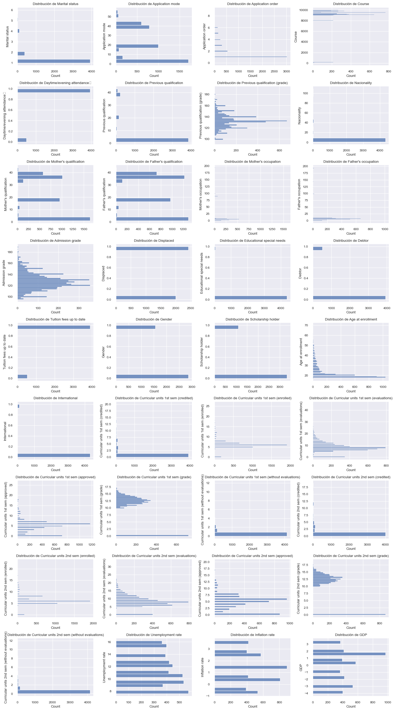
dataset_num = dataset.select_dtypes(include=np.number)
corr = dataset_num.corr()
print("Matriz de correlación:", corr.shape)
mask = np.zeros_like(corr)
mask[np.triu_indices_from(mask)] = True
plt.figure(figsize=(16, 12))
sns.set(font_scale=0.8)
sns.heatmap(
corr,
mask=mask,
cmap='Reds',
annot=True,
fmt='.2f',
annot_kws={"size": 8},
cbar=True
)
plt.xticks(rotation=45, ha="right")
plt.yticks(rotation=0)
plt.title("Matriz de Correlación - Dataset de Spotify", fontsize=14)
plt.tight_layout()
plt.show()
Matriz de correlación: (36, 36)
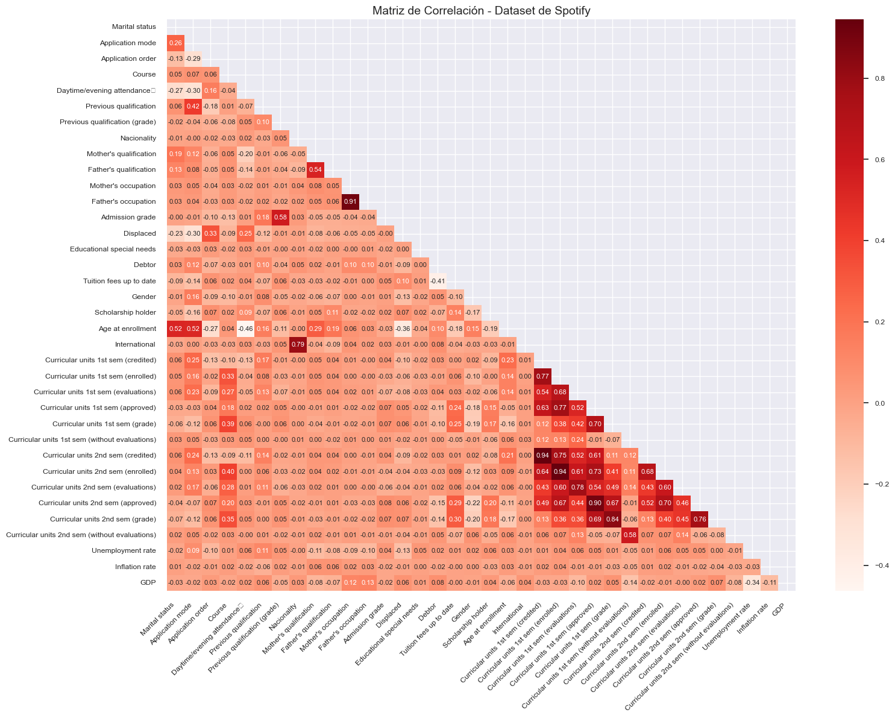
from statsmodels.stats.outliers_influence import variance_inflation_factor
from sklearn.preprocessing import StandardScaler
from IPython.display import display
def VIF_calculation(X):
VIF = pd.DataFrame()
VIF["variable"] = X.columns
VIF["VIF"] = [variance_inflation_factor(X.values, i) for i in range(X.shape[1])]
VIF = VIF.sort_values('VIF', ascending=False).reset_index(drop=True)
return VIF
def delete_multicollinearity(df, target_name, VIF_threshold=10):
X = df.drop(columns=[target_name])
X = X.select_dtypes(include=[np.number])
VIF_mat = VIF_calculation(X)
n_VIF = VIF_mat["VIF"][0]
if n_VIF <= VIF_threshold:
print(" No hay multicolinealidad.")
else:
print(" Se detectó multicolinealidad. Eliminando variables...")
while n_VIF > VIF_threshold:
print(f"Eliminando '{VIF_mat['variable'][0]}' con VIF={n_VIF:.2f}")
X = X.drop(columns=[VIF_mat["variable"][0]])
VIF_mat = VIF_calculation(X)
n_VIF = VIF_mat["VIF"][0]
display(VIF_mat)
return pd.concat([X, df[[target_name]]], axis=1)
df_copy = delete_multicollinearity(dataset, "Target", 10)
Se detectó multicolinealidad. Eliminando variables...
Eliminando 'Curricular units 1st sem (enrolled)' con VIF=180.79
Eliminando 'Previous qualification (grade)' con VIF=129.64
Eliminando 'Curricular units 2nd sem (enrolled)' con VIF=50.74
Eliminando 'Admission grade' con VIF=43.84
Eliminando 'Curricular units 1st sem (approved)' con VIF=36.97
Eliminando 'Curricular units 2nd sem (grade)' con VIF=25.24
Eliminando 'Course' con VIF=23.20
Eliminando 'Unemployment rate' con VIF=18.77
Eliminando 'Curricular units 1st sem (evaluations)' con VIF=16.33
Eliminando 'Age at enrollment' con VIF=16.11
Eliminando 'Curricular units 1st sem (grade)' con VIF=14.75
Eliminando 'Curricular units 2nd sem (credited)' con VIF=10.60
| variable | VIF | |
|---|---|---|
| 0 | Tuition fees up to date | 8.699219 |
| 1 | Daytime/evening attendance\t | 8.115330 |
| 2 | Curricular units 2nd sem (evaluations) | 7.362941 |
| 3 | Father's occupation | 7.070751 |
| 4 | Mother's occupation | 6.973680 |
| 5 | Curricular units 2nd sem (approved) | 6.278566 |
| 6 | Marital status | 4.714827 |
| 7 | Father's qualification | 4.364045 |
| 8 | Mother's qualification | 3.759655 |
| 9 | Application mode | 3.243779 |
| 10 | Application order | 3.147867 |
| 11 | Nacionality | 2.877175 |
| 12 | International | 2.773350 |
| 13 | Displaced | 2.733378 |
| 14 | Curricular units 1st sem (credited) | 1.812350 |
| 15 | Inflation rate | 1.802921 |
| 16 | Gender | 1.668187 |
| 17 | Curricular units 1st sem (without evaluations) | 1.656438 |
| 18 | Curricular units 2nd sem (without evaluations) | 1.624054 |
| 19 | Scholarship holder | 1.525082 |
| 20 | Previous qualification | 1.513809 |
| 21 | Debtor | 1.344172 |
| 22 | GDP | 1.083899 |
| 23 | Educational special needs | 1.016349 |
dataset_num = dataset.select_dtypes(include=np.number)
dataset_num = dataset_num.dropna(axis=1)
scaler = StandardScaler()
spotify_scaled = scaler.fit_transform(dataset_num)
vif_data = pd.DataFrame()
vif_data["Variable"] = dataset_num.columns
vif_data["VIF"] = [variance_inflation_factor(spotify_scaled, i) for i in range(spotify_scaled.shape[1])]
print(vif_data.sort_values(by="VIF", ascending=False))
Variable VIF
22 Curricular units 1st sem (enrolled) 24.482511
28 Curricular units 2nd sem (enrolled) 17.207212
21 Curricular units 1st sem (credited) 16.223547
24 Curricular units 1st sem (approved) 13.103872
27 Curricular units 2nd sem (credited) 12.591785
30 Curricular units 2nd sem (approved) 10.736544
10 Mother's occupation 5.979421
11 Father's occupation 5.970843
31 Curricular units 2nd sem (grade) 5.778227
25 Curricular units 1st sem (grade) 5.197275
23 Curricular units 1st sem (evaluations) 4.014065
29 Curricular units 2nd sem (evaluations) 3.386472
20 International 2.713637
7 Nacionality 2.694558
19 Age at enrollment 2.301982
3 Course 2.240226
1 Application mode 1.815790
26 Curricular units 1st sem (without evaluations) 1.713211
12 Admission grade 1.628009
32 Curricular units 2nd sem (without evaluations) 1.587049
6 Previous qualification (grade) 1.570796
8 Mother's qualification 1.539365
9 Father's qualification 1.454268
0 Marital status 1.425762
4 Daytime/evening attendance\t 1.376207
16 Tuition fees up to date 1.350886
5 Previous qualification 1.349991
13 Displaced 1.315167
35 GDP 1.291736
33 Unemployment rate 1.291735
15 Debtor 1.257405
2 Application order 1.252299
18 Scholarship holder 1.175167
17 Gender 1.155016
34 Inflation rate 1.043731
14 Educational special needs 1.009336
print("Distribución de la variable target:")
print(dataset['Target'].value_counts(normalize=True)*100)
ax = sns.countplot(x='Target', data=dataset)
plt.title('Distribución de la variable Target')
plt.xlabel('Target')
plt.ylabel('Cantidad')
for p in ax.patches:
ax.annotate(f'{int(p.get_height())}',
(p.get_x() + p.get_width() / 2, p.get_height()),
ha='center', va='bottom')
plt.show()
Distribución de la variable target:
Target
Graduate 49.932188
Dropout 32.120253
Enrolled 17.947559
Name: proportion, dtype: float64
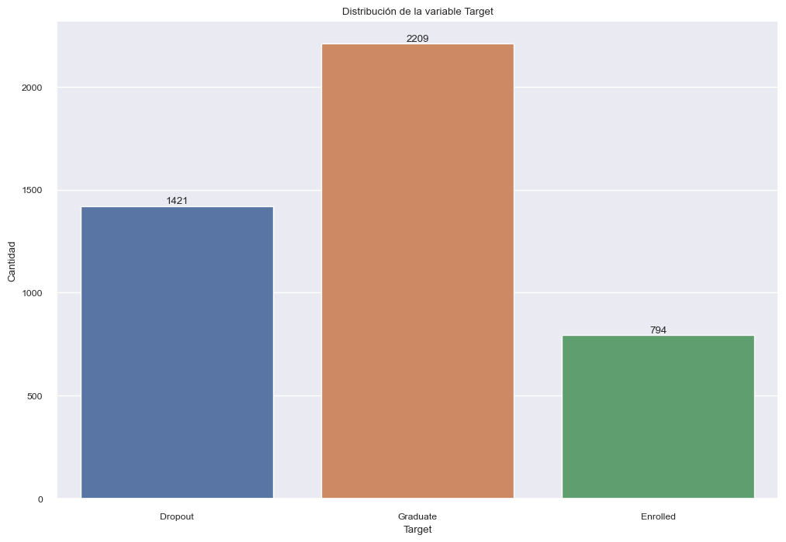
from sklearn.preprocessing import RobustScaler
print("Escalado de características")
scaler = RobustScaler()
df_scaled = dataset.copy()
df_scaled[numeric_cols] = scaler.fit_transform(dataset[numeric_cols])
print("\nEstadísticas después de escalado (RobustScaler):")
print(df_scaled[numeric_cols].describe().T)
Escalado de características
Estadísticas después de escalado (RobustScaler):
count mean std \
Marital status 4424.0 0.178571 0.605747
Application mode 4424.0 0.043923 0.460123
Application order 4424.0 0.727848 1.313793
Course 4424.0 -0.809676 4.381245
Daytime/evening attendance\t 4424.0 -0.109177 0.311897
Previous qualification 4424.0 3.577758 10.216592
Previous qualification (grade) 4424.0 -0.032446 0.879222
Nacionality 4424.0 0.873192 6.914514
Mother's qualification 4424.0 0.016055 0.445805
Father's qualification 4424.0 0.096333 0.451268
Mother's occupation 4424.0 1.192179 5.283651
Father's occupation 4424.0 0.806465 5.052608
Admission grade 4424.0 0.051960 0.856923
Displaced 4424.0 -0.451627 0.497711
Educational special needs 4424.0 0.011528 0.106760
Debtor 4424.0 0.113698 0.317480
Tuition fees up to date 4424.0 -0.119349 0.324235
Gender 4424.0 0.351718 0.477560
Scholarship holder 4424.0 0.248418 0.432144
Age at enrollment 4424.0 0.544191 1.264636
International 4424.0 0.024864 0.155729
Curricular units 1st sem (credited) 4424.0 0.709991 2.360507
Curricular units 1st sem (enrolled) 4424.0 0.135285 1.240089
Curricular units 1st sem (evaluations) 4424.0 0.074763 1.044776
Curricular units 1st sem (approved) 4424.0 -0.097800 1.031413
Curricular units 1st sem (grade) 4424.0 -0.685372 2.018193
Curricular units 1st sem (without evaluations) 4424.0 0.137658 0.690880
Curricular units 2nd sem (credited) 4424.0 0.541817 1.918546
Curricular units 2nd sem (enrolled) 4424.0 0.116071 1.097975
Curricular units 2nd sem (evaluations) 4424.0 0.015823 0.986988
Curricular units 2nd sem (approved) 4424.0 -0.141049 0.753691
Curricular units 2nd sem (grade) 4424.0 -0.762501 2.017087
Curricular units 2nd sem (without evaluations) 4424.0 0.150316 0.753774
Unemployment rate 4424.0 0.103586 0.591967
Inflation rate 4424.0 -0.074770 0.601179
GDP 4424.0 -0.091126 0.650411
min 25% 50% \
Marital status 0.000000 0.000000 0.0
Application mode -0.421053 -0.421053 0.0
Application order -1.000000 0.000000 0.0
Course -19.543524 -0.324841 0.0
Daytime/evening attendance\t -1.000000 0.000000 0.0
Previous qualification 0.000000 0.000000 0.0
Previous qualification (grade) -2.540000 -0.540000 0.0
Nacionality 0.000000 0.000000 0.0
Mother's qualification -0.514286 -0.485714 0.0
Father's qualification -0.529412 -0.470588 0.0
Mother's occupation -1.000000 -0.200000 0.0
Father's occupation -1.400000 -0.600000 0.0
Admission grade -1.840237 -0.485207 0.0
Displaced -1.000000 -1.000000 0.0
Educational special needs 0.000000 0.000000 0.0
Debtor 0.000000 0.000000 0.0
Tuition fees up to date -1.000000 0.000000 0.0
Gender 0.000000 0.000000 0.0
Scholarship holder 0.000000 0.000000 0.0
Age at enrollment -0.500000 -0.166667 0.0
International 0.000000 0.000000 0.0
Curricular units 1st sem (credited) 0.000000 0.000000 0.0
Curricular units 1st sem (enrolled) -3.000000 -0.500000 0.0
Curricular units 1st sem (evaluations) -2.000000 -0.500000 0.0
Curricular units 1st sem (approved) -1.666667 -0.666667 0.0
Curricular units 1st sem (grade) -5.119048 -0.535714 0.0
Curricular units 1st sem (without evaluations) 0.000000 0.000000 0.0
Curricular units 2nd sem (credited) 0.000000 0.000000 0.0
Curricular units 2nd sem (enrolled) -3.000000 -0.500000 0.0
Curricular units 2nd sem (evaluations) -2.000000 -0.500000 0.0
Curricular units 2nd sem (approved) -1.250000 -0.750000 0.0
Curricular units 2nd sem (grade) -4.722581 -0.561290 0.0
Curricular units 2nd sem (without evaluations) 0.000000 0.000000 0.0
Unemployment rate -0.777778 -0.377778 0.0
Inflation rate -0.956522 -0.478261 0.0
GDP -1.255014 -0.578797 0.0
75% max
Marital status 0.000000 5.000000
Application mode 0.578947 1.052632
Application order 1.000000 8.000000
Course 0.675159 1.598726
Daytime/evening attendance\t 0.000000 0.000000
Previous qualification 0.000000 42.000000
Previous qualification (grade) 0.460000 3.793333
Nacionality 0.000000 108.000000
Mother's qualification 0.514286 0.714286
Father's qualification 0.529412 0.735294
Mother's occupation 0.800000 37.800000
Father's occupation 0.400000 37.600000
Admission grade 0.514793 3.781065
Displaced 0.000000 0.000000
Educational special needs 0.000000 1.000000
Debtor 0.000000 1.000000
Tuition fees up to date 0.000000 0.000000
Gender 1.000000 1.000000
Scholarship holder 0.000000 1.000000
Age at enrollment 0.833333 8.333333
International 0.000000 1.000000
Curricular units 1st sem (credited) 0.000000 20.000000
Curricular units 1st sem (enrolled) 0.500000 10.000000
Curricular units 1st sem (evaluations) 0.500000 9.250000
Curricular units 1st sem (approved) 0.333333 7.000000
Curricular units 1st sem (grade) 0.464286 2.745536
Curricular units 1st sem (without evaluations) 0.000000 12.000000
Curricular units 2nd sem (credited) 0.000000 19.000000
Curricular units 2nd sem (enrolled) 0.500000 8.500000
Curricular units 2nd sem (evaluations) 0.500000 6.250000
Curricular units 2nd sem (approved) 0.250000 3.750000
Curricular units 2nd sem (grade) 0.438710 2.466359
Curricular units 2nd sem (without evaluations) 0.000000 12.000000
Unemployment rate 0.622222 1.133333
Inflation rate 0.521739 1.000000
GDP 0.421203 0.914040
from sklearn.preprocessing import PowerTransformer, RobustScaler
from sklearn.feature_selection import mutual_info_classif, SelectKBest, f_classif
from statsmodels.stats.outliers_influence import variance_inflation_factor
import warnings
target_encoded = dataset['Target'].astype('category').cat.codes
mi_scores = mutual_info_classif(dataset[numeric_cols], target_encoded, random_state=42)
mi_dataset = pd.DataFrame({'Variable': numeric_cols, 'MI_Score': mi_scores})
mi_dataset = mi_dataset.sort_values('MI_Score', ascending=False)
selector = SelectKBest(score_func=f_classif, k='all')
selector.fit(dataset[numeric_cols], target_encoded)
anova_df = pd.DataFrame({'Variable': numeric_cols, 'F_Score': selector.scores_})
anova_df = anova_df.sort_values('F_Score', ascending=False)
feature_importance = mi_dataset.merge(anova_df, on='Variable')
feature_importance['Combined_Score'] = (feature_importance['MI_Score'] +
feature_importance['F_Score']/feature_importance['F_Score'].max())
feature_importance = feature_importance.sort_values('Combined_Score', ascending=False)
print("\nVariables predictoras más importantes:")
print(feature_importance.head(15))
Variables predictoras más importantes:
Variable MI_Score F_Score \
0 Curricular units 2nd sem (approved) 0.310207 1410.732938
1 Curricular units 2nd sem (grade) 0.239324 1134.109544
2 Curricular units 1st sem (approved) 0.233439 859.866768
3 Curricular units 1st sem (grade) 0.184882 713.517328
4 Tuition fees up to date 0.100460 505.621429
14 Scholarship holder 0.037139 225.751437
7 Age at enrollment 0.065516 154.712071
5 Curricular units 2nd sem (evaluations) 0.096761 87.801092
15 Debtor 0.033628 137.647527
10 Application mode 0.046571 114.534956
18 Gender 0.024435 123.041811
6 Curricular units 1st sem (evaluations) 0.075691 37.527840
12 Curricular units 2nd sem (enrolled) 0.041576 75.591910
9 Curricular units 1st sem (enrolled) 0.052744 59.467391
11 Previous qualification (grade) 0.044584 27.728589
Combined_Score
0 1.310207
1 1.043239
2 0.842957
3 0.690660
4 0.458870
14 0.197163
7 0.175184
5 0.158999
15 0.131200
10 0.127759
18 0.111653
6 0.102293
12 0.095160
9 0.094897
11 0.064239
top_features = feature_importance['Variable'].head(10).tolist()
print("\nTop 10 variables predictoras identificadas:")
print(top_features)
plt.figure(figsize=(15, 10))
for i, col in enumerate(top_features):
plt.subplot(3, 4, i+1)
if col in numeric_cols:
sns.boxplot(data=dataset, y=col, x='Target')
else:
sns.countplot(data=dataset, x=col, hue='Target')
plt.title(col)
plt.xticks(rotation=45)
plt.tight_layout()
plt.show()
Top 10 variables predictoras identificadas:
['Curricular units 2nd sem (approved)', 'Curricular units 2nd sem (grade)', 'Curricular units 1st sem (approved)', 'Curricular units 1st sem (grade)', 'Tuition fees up to date', 'Scholarship holder', 'Age at enrollment', 'Curricular units 2nd sem (evaluations)', 'Debtor', 'Application mode']
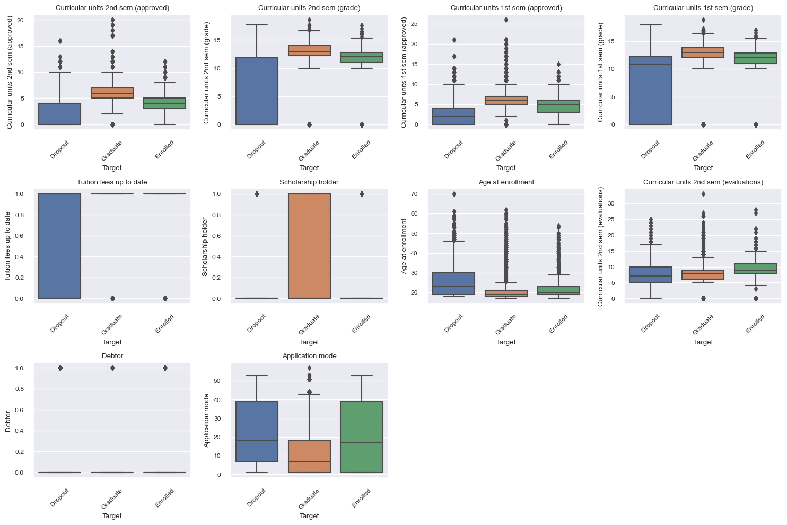
print("Análisis Bivariado Avanzado")
top_numeric = [f for f in top_features if f in numeric_cols][:5]
if top_numeric:
sns.pairplot(data=dataset, vars=top_numeric, hue='Target')
plt.suptitle('Pairplot de Variables Numéricas Clave', y=1.02)
plt.show()
print("Correlación entre Variables Clave y Target (codificado)")
if 'Target' in dataset.select_dtypes(include=['number']).columns:
corr_data = dataset[top_numeric + ['Target']]
else:
corr_data = dataset[top_numeric].join(target_encoded.rename('Target_encoded'))
top_corr = corr_data.corr()
plt.figure(figsize=(10, 8))
sns.heatmap(top_corr, annot=True, fmt=".2f", cmap='coolwarm', center=0)
plt.show()
else:
print("No se encontraron variables numéricas entre las características seleccionadas.")
Análisis Bivariado Avanzado
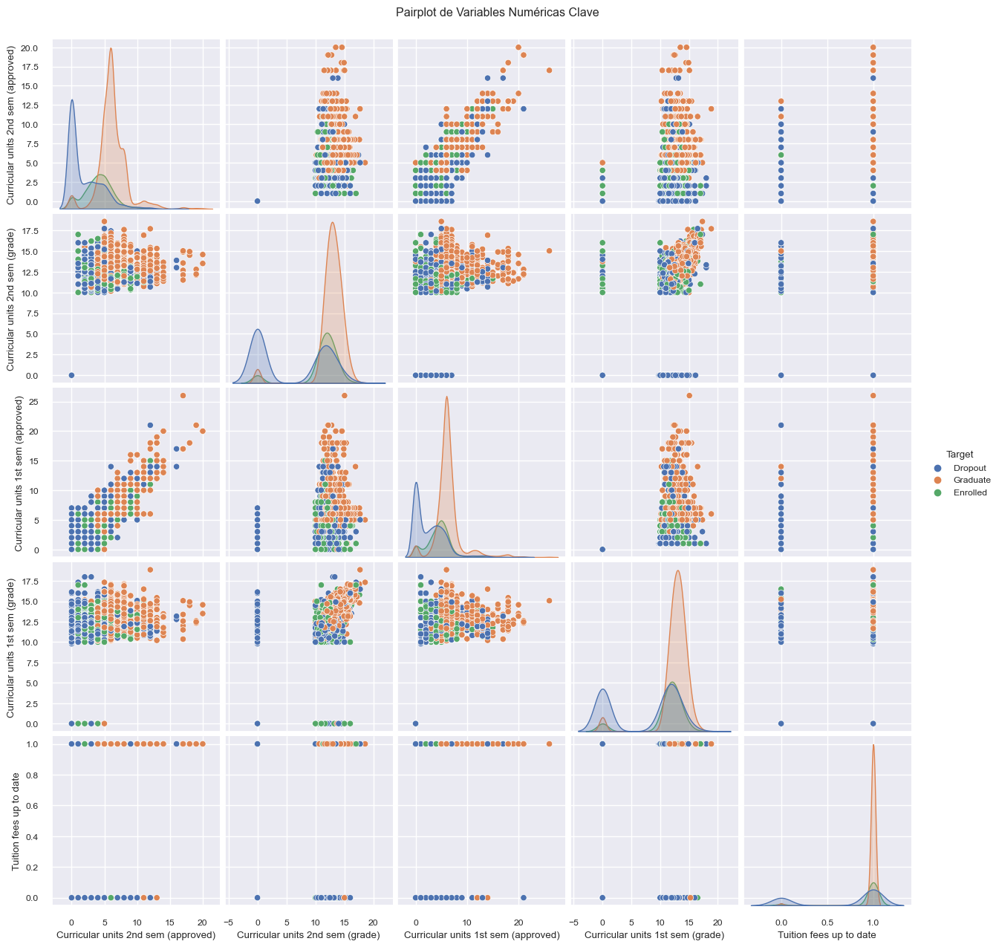
Correlación entre Variables Clave y Target (codificado)
categorical_nominal = [
'Marital status', 'Application mode', 'Course', 'Nacionality',
"Mother's occupation", "Father's occupation"
]
for col in categorical_nominal:
dataset[col] = dataset[col].astype(str)
dataset['Target_binary'] = dataset['Target'].apply(lambda x: 0 if x == 'Dropout' else 1)
X = dataset.drop(['Target', 'Target_binary'], axis=1)
y = dataset['Target_binary']
numeric_cols = X.select_dtypes(include=['int64', 'float64']).columns.tolist()
X_train, X_test, y_train, y_test = train_test_split(
X, y, test_size=0.3, random_state=42, stratify=y
)
preprocessor = ColumnTransformer(
transformers=[
('num', StandardScaler(), numeric_cols),
('cat', OneHotEncoder(drop='first', handle_unknown='ignore'), categorical_nominal)
],
remainder='passthrough'
)
pipeline = Pipeline([
('preprocessor', preprocessor),
('classifier', KNeighborsClassifier())
])
best_score = 0
best_k = 1
cv_scores = []
for k in range(1, 20):
pipeline.set_params(classifier__n_neighbors=k)
scores = cross_val_score(pipeline, X_train, y_train, cv=5, scoring='accuracy')
mean_score = np.mean(scores)
cv_scores.append(mean_score)
if mean_score > best_score:
best_score = mean_score
best_k = k
print(f"\nMejor k encontrado: {best_k} con accuracy de validación cruzada: {best_score:.4f}")
pipeline.set_params(classifier__n_neighbors=best_k)
pipeline.fit(X_train, y_train)
y_pred = pipeline.predict(X_test)
print("\nAccuracy en test:", accuracy_score(y_test, y_pred))
print("\nClassification Report:\n", classification_report(y_test, y_pred))
cm = confusion_matrix(y_test, y_pred)
plt.figure(figsize=(6,5))
sns.heatmap(cm, annot=True, fmt='d', cmap='Blues',
xticklabels=['Dropout (0)', 'Continúa/Termina (1)'],
yticklabels=['Dropout (0)', 'Continúa/Termina (1)'])
plt.title(f"Matriz de Confusión (k={best_k})")
plt.xlabel("Predicho")
plt.ylabel("Real")
plt.show()
X_train_processed = pipeline.named_steps['preprocessor'].transform(X_train)
X_train_processed = X_train_processed.toarray()
pca = PCA(n_components=2)
X_pca = pca.fit_transform(X_train_processed)
plt.figure(figsize=(8,6))
scatter = plt.scatter(X_pca[:, 0], X_pca[:, 1], c=y_train, cmap='viridis', alpha=0.6)
plt.title('Visualización PCA (2 Componentes) - Datos de Entrenamiento')
plt.xlabel('Componente Principal 1')
plt.ylabel('Componente Principal 2')
plt.legend(handles=scatter.legend_elements()[0],
labels=['Dropout (0)', 'Continúa/Termina (1)'])
plt.show()
def plot_decision_boundaries(X_pca, y, k):
clf = KNeighborsClassifier(n_neighbors=k)
clf.fit(X_pca, y)
x_min, x_max = X_pca[:, 0].min() - 1, X_pca[:, 0].max() + 1
y_min, y_max = X_pca[:, 1].min() - 1, X_pca[:, 1].max() + 1
xx, yy = np.meshgrid(np.arange(x_min, x_max, 0.1),
np.arange(y_min, y_max, 0.1))
Z = clf.predict(np.c_[xx.ravel(), yy.ravel()])
Z = Z.reshape(xx.shape)
plt.figure(figsize=(8,6))
plt.contourf(xx, yy, Z, alpha=0.4, cmap='viridis')
scatter = plt.scatter(X_pca[:, 0], X_pca[:, 1], c=y, cmap='viridis', edgecolor='k')
plt.title(f'Fronteras de Decisión KNN (k={k}) - PCA')
plt.xlabel('Componente Principal 1')
plt.ylabel('Componente Principal 2')
plt.legend(handles=scatter.legend_elements()[0],
labels=['Dropout (0)', 'Continúa/Termina (1)'])
plt.show()
plot_decision_boundaries(X_pca, y_train, best_k)
Mejor k encontrado: 8 con accuracy de validación cruzada: 0.8466
Accuracy en test: 0.8381024096385542
Classification Report:
precision recall f1-score support
0 0.85 0.60 0.71 427
1 0.83 0.95 0.89 901
accuracy 0.84 1328
macro avg 0.84 0.78 0.80 1328
weighted avg 0.84 0.84 0.83 1328
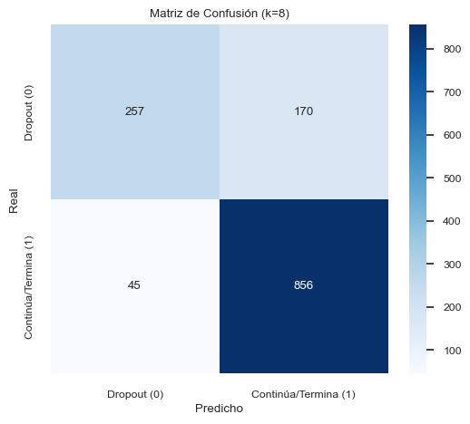
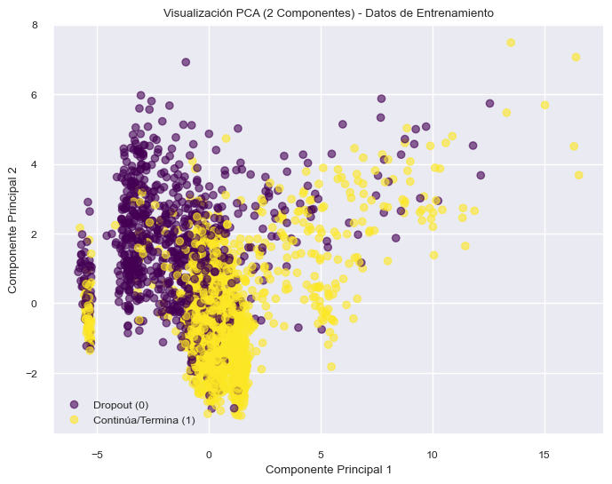
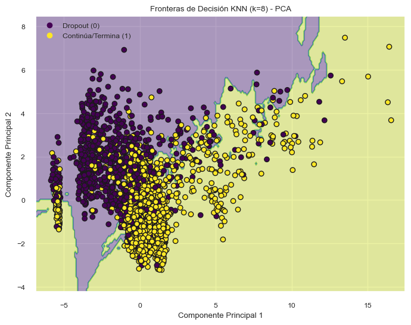
dataset['abandona'] = dataset['Target'].apply(lambda x: 1 if x == 'Dropout' else 0)
print("Columnas disponibles:", dataset.columns.tolist())
variables = [
'Marital status',
'Application mode',
'Application order',
'Course',
'Daytime/evening attendance', # Sin \t
'Previous qualification',
'Previous qualification (grade)',
'Admission grade',
'Age at enrollment',
'Curricular units 1st sem (credited)',
'Curricular units 1st sem (enrolled)',
'Curricular units 1st sem (evaluations)',
'Curricular units 1st sem (approved)',
'Curricular units 1st sem (grade)',
'Curricular units 2nd sem (enrolled)',
'Curricular units 2nd sem (evaluations)',
'Curricular units 2nd sem (approved)',
'Curricular units 2nd sem (grade)']
def find_column(possible_names, df_columns):
for name in possible_names:
for col in df_columns:
if name.lower().replace(' ', '') in col.lower().replace(' ', ''):
return col
return None
real_columns = []
for var in variables:
col = find_column([var, var.replace(' ', '_'), var.replace(' ', '')], dataset.columns)
if col is not None:
real_columns.append(col)
else:
print(f"No se encontró columna para '{var}'")
df = dataset[real_columns].copy()
df.columns = [col.lower().replace(' ', '_').replace('(', '').replace(')', '') for col in df.columns]
categorical_cols = df.select_dtypes(include=['object']).columns.tolist()
numeric_cols = df.select_dtypes(include=['number']).columns.tolist()
numeric_transformer = Pipeline(steps=[
('scaler', StandardScaler())
])
categorical_transformer = Pipeline(steps=[
('onehot', OneHotEncoder(handle_unknown='ignore'))
])
preprocessor = ColumnTransformer(
transformers=[
('num', numeric_transformer, numeric_cols),
('cat', categorical_transformer, categorical_cols)
])
X = df
y = dataset['abandona']
X_train, X_test, y_train, y_test = train_test_split(
X, y, test_size=0.3, random_state=42, stratify=y
)
numeric_cols = X_train.select_dtypes(include=['int64', 'float64']).columns.tolist()
scaler = StandardScaler()
X_train_scaled = scaler.fit_transform(X_train[numeric_cols])
X_test_scaled = scaler.transform(X_test[numeric_cols])
X_train_scaled = pd.DataFrame(X_train_scaled, columns=numeric_cols, index=X_train.index)
X_test_scaled = pd.DataFrame(X_test_scaled, columns=numeric_cols, index=X_test.index)
k_values = range(1, 21)
metrics = {
'Accuracy': [],
'Precision': [],
'Recall': [],
'F1-Score': []
}
for k in k_values:
model = Pipeline(steps=[
('preprocessor', preprocessor),
('classifier', KNeighborsClassifier(n_neighbors=k))
])
model.fit(X_train, y_train)
y_pred = model.predict(X_test)
metrics['Accuracy'].append(accuracy_score(y_test, y_pred))
metrics['Precision'].append(precision_score(y_test, y_pred))
metrics['Recall'].append(recall_score(y_test, y_pred))
metrics['F1-Score'].append(f1_score(y_test, y_pred))
best_k = k_values[np.argmax(metrics['F1-Score'])]
print(f"\nMejor valor de k: {best_k}")
plt.figure(figsize=(14, 8))
for metric_name, values in metrics.items():
plt.plot(k_values, values, marker='o', label=metric_name, linewidth=2)
plt.title('Desempeño de KNN para diferentes valores de k', fontsize=16, pad=20)
plt.xlabel('Número de Vecinos (k)', fontsize=12)
plt.ylabel('Puntuación', fontsize=12)
plt.xticks(k_values)
plt.yticks(np.arange(0.5, 1.01, 0.05))
plt.grid(True, linestyle='--', alpha=0.7)
plt.legend(fontsize=12)
best_score = max(metrics['F1-Score'])
plt.axvline(x=best_k, color='red', linestyle=':', linewidth=1.5)
plt.text(best_k+0.5, 0.55, f'Mejor k = {best_k}\nF1-Score = {best_score:.3f}',
fontsize=12, bbox=dict(facecolor='white', alpha=0.8))
plt.show()
final_model = Pipeline(steps=[
('preprocessor', preprocessor),
('classifier', KNeighborsClassifier(n_neighbors=best_k))
])
final_model.fit(X_train, y_train)
y_pred = final_model.predict(X_test)
print("\nReporte de Clasificación (k = {}):".format(best_k))
print(classification_report(y_test, y_pred))
print("\nReporte de Clasificación:")
print(classification_report(y_test, y_pred))
Columnas disponibles: ['Marital status', 'Application mode', 'Application order', 'Course', 'Daytime/evening attendance\t', 'Previous qualification', 'Previous qualification (grade)', 'Nacionality', "Mother's qualification", "Father's qualification", "Mother's occupation", "Father's occupation", 'Admission grade', 'Displaced', 'Educational special needs', 'Debtor', 'Tuition fees up to date', 'Gender', 'Scholarship holder', 'Age at enrollment', 'International', 'Curricular units 1st sem (credited)', 'Curricular units 1st sem (enrolled)', 'Curricular units 1st sem (evaluations)', 'Curricular units 1st sem (approved)', 'Curricular units 1st sem (grade)', 'Curricular units 1st sem (without evaluations)', 'Curricular units 2nd sem (credited)', 'Curricular units 2nd sem (enrolled)', 'Curricular units 2nd sem (evaluations)', 'Curricular units 2nd sem (approved)', 'Curricular units 2nd sem (grade)', 'Curricular units 2nd sem (without evaluations)', 'Unemployment rate', 'Inflation rate', 'GDP', 'Target', 'Target_binary', 'abandona']
Mejor valor de k: 9
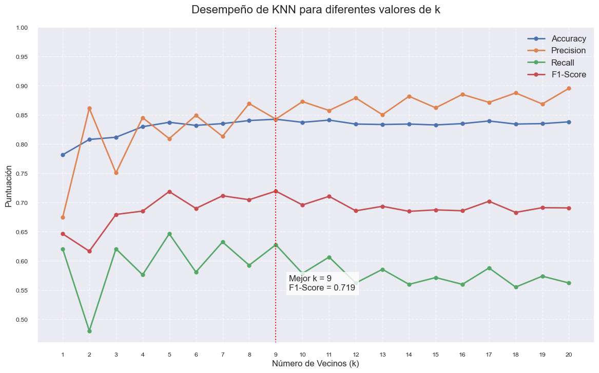
Reporte de Clasificación (k = 9):
precision recall f1-score support
0 0.84 0.94 0.89 901
1 0.84 0.63 0.72 427
accuracy 0.84 1328
macro avg 0.84 0.79 0.81 1328
weighted avg 0.84 0.84 0.84 1328
Reporte de Clasificación:
precision recall f1-score support
0 0.84 0.94 0.89 901
1 0.84 0.63 0.72 427
accuracy 0.84 1328
macro avg 0.84 0.79 0.81 1328
weighted avg 0.84 0.84 0.84 1328
from sklearn.metrics import roc_curve, auc
y_proba = knn.predict_proba(X_test_scaled)[:, 1]
fpr, tpr, thresholds = roc_curve(y_test, y_proba)
roc_auc = auc(fpr, tpr)
plt.figure(figsize=(10, 8))
plt.plot(fpr, tpr, color='darkorange', lw=2,
label=f'Curva ROC (AUC = {roc_auc:.2f})')
plt.plot([0, 1], [0, 1], color='navy', lw=2, linestyle='--')
plt.xlim([0.0, 1.0])
plt.ylim([0.0, 1.05])
plt.xlabel('Tasa de Falsos Positivos')
plt.ylabel('Tasa de Verdaderos Positivos')
plt.title('Curva ROC para Predicción de Abandono')
plt.legend(loc="lower right")
plt.grid()
plt.show()
print("\n" + "="*80)
print("Modelado de Regresión de Calificaciones")
print("="*80)
calificacion_col = 'Curricular units 2nd sem (grade)'
if calificacion_col in dataset.columns:
y_reg = dataset[calificacion_col]
X_reg = df
X_reg_train, X_reg_test, y_reg_train, y_reg_test = train_test_split(
X_reg, y_reg, test_size=0.3, random_state=42
)
numeric_cols_reg = X_reg_train.select_dtypes(include=['number']).columns.tolist()
scaler_reg = StandardScaler()
X_reg_train_scaled = scaler_reg.fit_transform(X_reg_train[numeric_cols_reg])
X_reg_test_scaled = scaler_reg.transform(X_reg_test[numeric_cols_reg])
K_LIST = range(1, 21)
reg_results = []
for k in K_LIST:
model = KNeighborsRegressor(n_neighbors=k)
model.fit(X_reg_train_scaled, y_reg_train)
y_pred = model.predict(X_reg_test_scaled)
reg_results.append({
'k': k,
'mae': mean_absolute_error(y_reg_test, y_pred),
'rmse': np.sqrt(mean_squared_error(y_reg_test, y_pred)),
'r2': r2_score(y_reg_test, y_pred)
})
reg_results_df = pd.DataFrame(reg_results)
best_k_reg = int(reg_results_df.sort_values('rmse').iloc[0]['k'])
plt.figure(figsize=(12, 8))
plt.plot(reg_results_df['k'], reg_results_df['mae'], 'o-', label='MAE')
plt.plot(reg_results_df['k'], reg_results_df['rmse'], 'o-', label='RMSE', linewidth=3)
plt.plot(reg_results_df['k'], reg_results_df['r2'], 'o-', label='R²')
plt.axvline(best_k_reg, color='r', linestyle='--', label=f'Mejor k = {best_k_reg}')
plt.title('Desempeño de KNN en Regresión por Valor de k', fontsize=16)
plt.xlabel('Número de Vecinos (k)')
plt.ylabel('Puntuación')
plt.legend()
plt.grid(True, alpha=0.3)
plt.xticks(K_LIST)
plt.tight_layout()
plt.show()
knn_reg = KNeighborsRegressor(n_neighbors=best_k_reg)
knn_reg.fit(X_reg_train_scaled, y_reg_train)
y_reg_pred = knn_reg.predict(X_reg_test_scaled)
print("\n" + "-"*60)
print(f"Reporte Regresión (k={best_k_reg})")
print("-"*60)
print(f"MAE: {mean_absolute_error(y_reg_test, y_reg_pred):.4f}")
print(f"RMSE: {np.sqrt(mean_squared_error(y_reg_test, y_reg_pred)):.4f}")
print(f"R²: {r2_score(y_reg_test, y_reg_pred):.4f}")
print("-"*60)
plt.figure(figsize=(10, 8))
plt.scatter(y_reg_test, y_reg_pred, alpha=0.6, color='teal')
plt.plot([y_reg_test.min(), y_reg_test.max()],
[y_reg_test.min(), y_reg_test.max()],
'--r', linewidth=2, label='Línea de perfecta predicción')
plt.title('Valores Reales vs Predicciones (Calificaciones)', fontsize=16)
plt.xlabel('Calificaciones Reales')
plt.ylabel('Calificaciones Predichas')
plt.legend()
plt.grid(True, alpha=0.3)
plt.tight_layout()
plt.show()
residuals = y_reg_test - y_reg_pred
plt.figure(figsize=(10, 6))
plt.scatter(y_reg_pred, residuals, alpha=0.6, color='purple')
plt.axhline(y=0, color='r', linestyle='--')
else:
print(f"\nAdvertencia: No se encontró la columna '{calificacion_col}' para regresión")
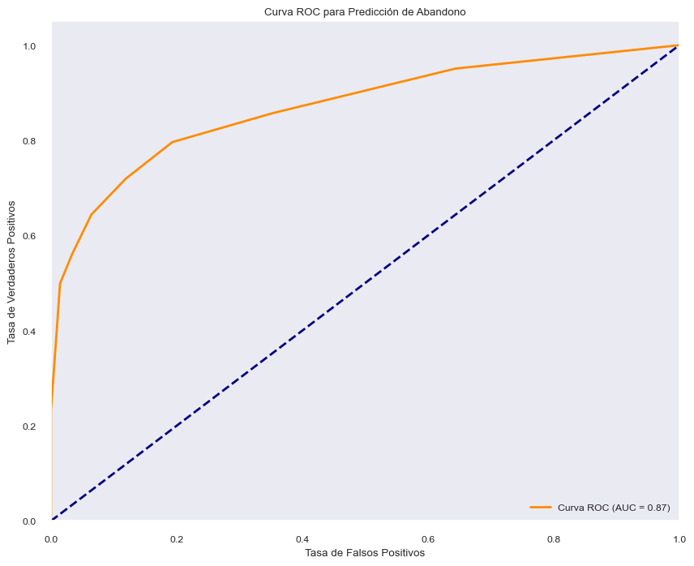
================================================================================
Modelado de Regresión de Calificaciones
================================================================================
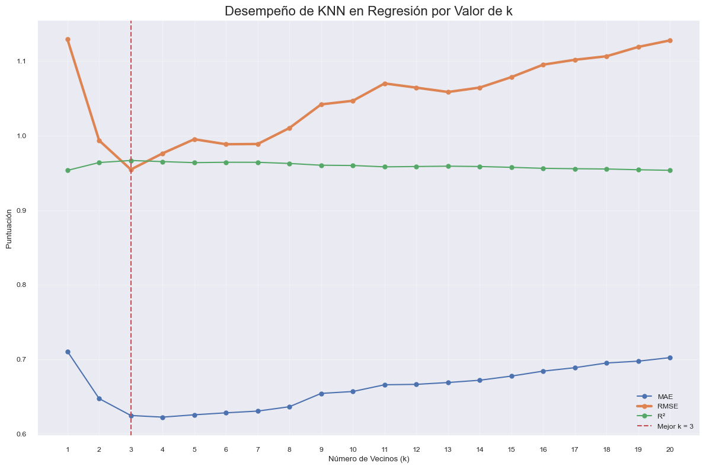
------------------------------------------------------------
Reporte Regresión (k=3)
------------------------------------------------------------
MAE: 0.6245
RMSE: 0.9546
R²: 0.9667
------------------------------------------------------------
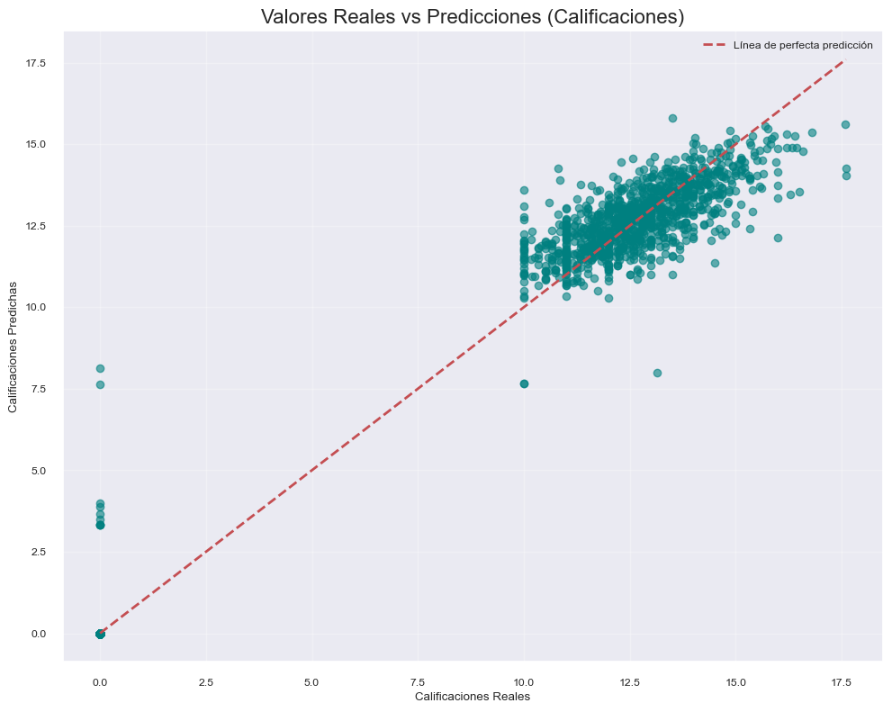
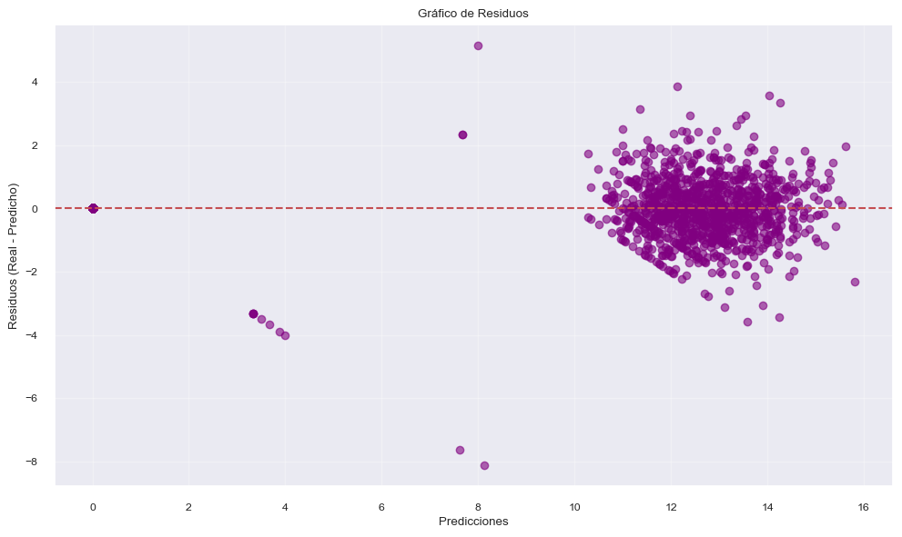